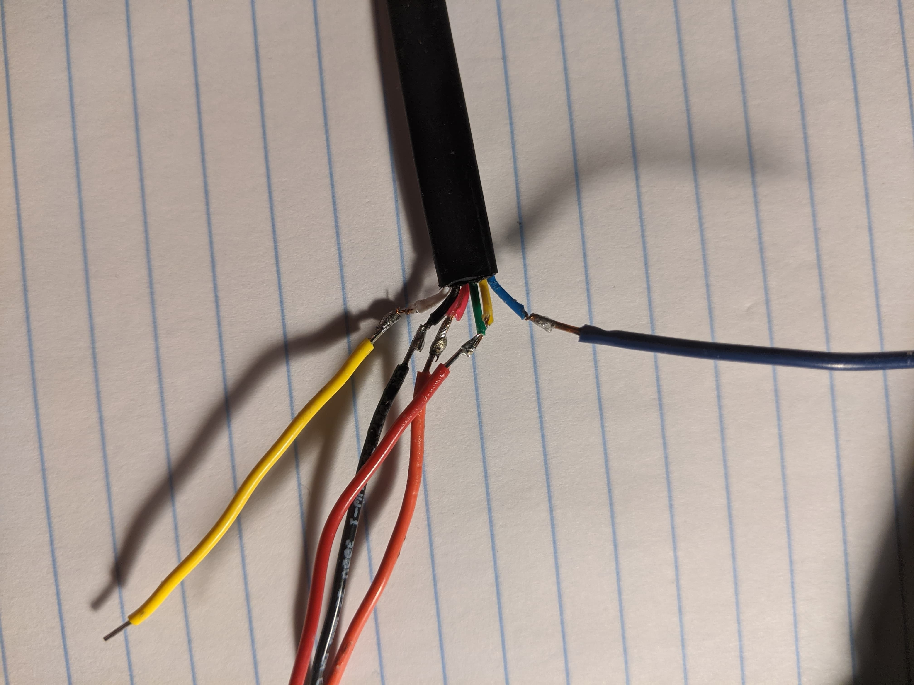
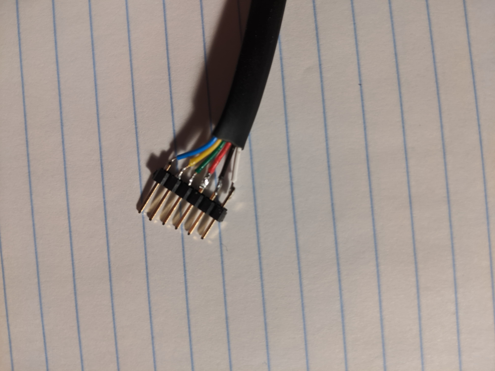
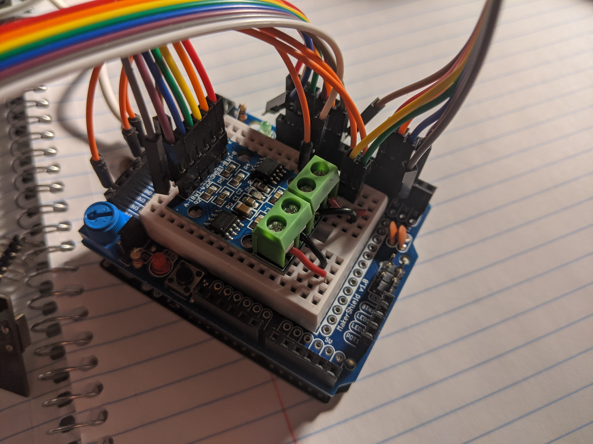
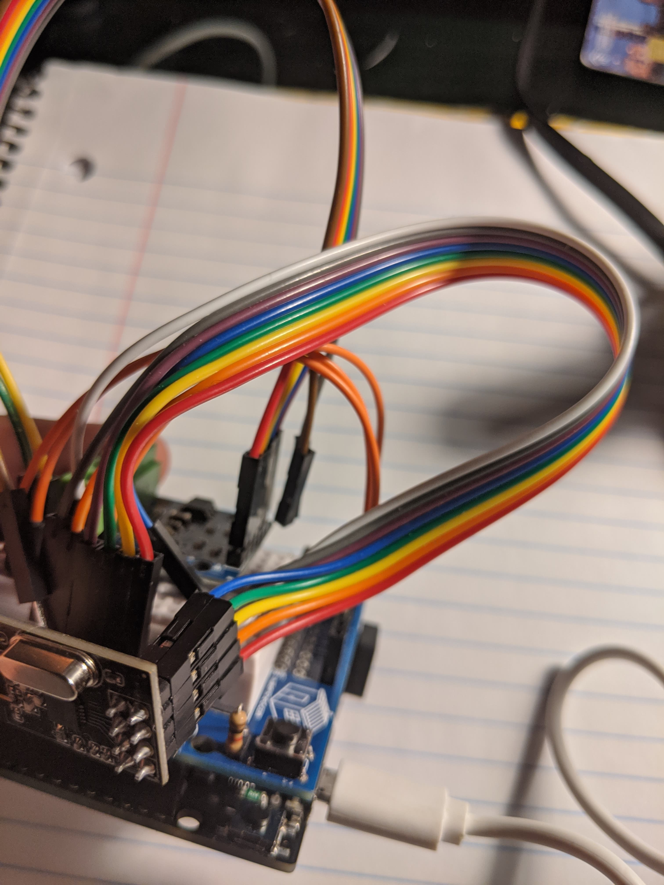
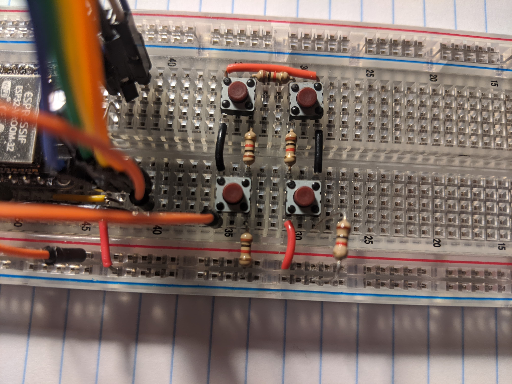
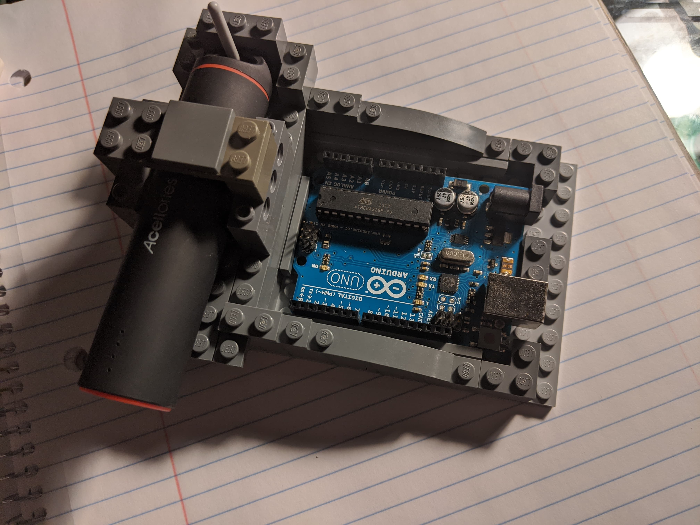
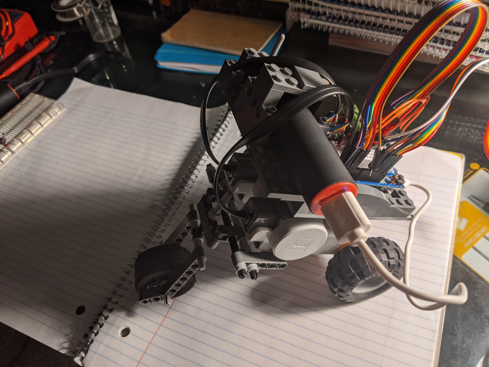
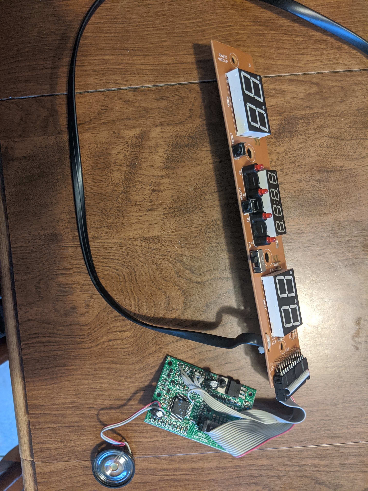
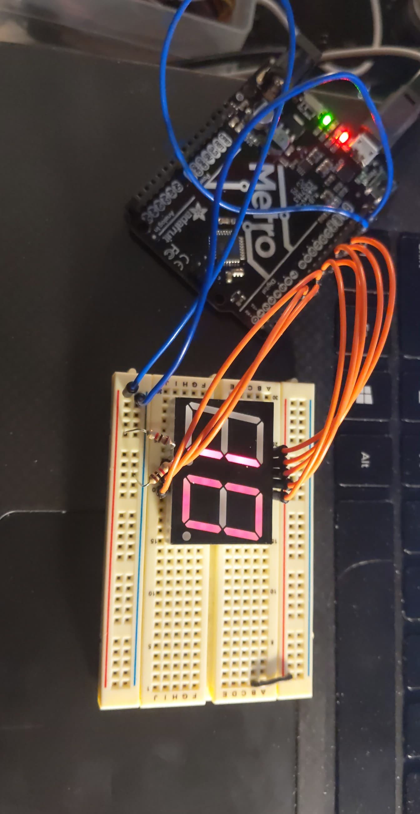

Networking
My main project for the week was to use the radio modules to make a controller for a remote controlled car. To make this, I planned to use the motors from my NXT kit which I started to explore last week. The motors were much easier to understand than the complicated I2C protocol for the ultrasonic sensor. The motors have encoder pins to determine the motors speed and position and 2 pins to power the sensors for this. The final 2 pins are used to power the motor. Rather than needing all 6 pins like last week, I only needed these last two to power the motor. I found some helpful information on the pinout here.
Last week I had spliced open one of the RJ12 cables that connects to the NXT sensors and motors. My soldering to individual wires did not hold up very well:

I cut open a new cable and this time I used some header pins I had lying around to create a more stable connection to a fixed set of pins that would fit neatly in a breadboard

So far these connections have been much sturdier. To drive two motors simultaneously both forward and backward, I used a motor driver. This driver has four connections for the motor power and 6 pins, 2 for ground and vcc, and 4 for left/right and forward/backward control. You can see the motor power connections here as red and black wires coming from green hubs on the motor driver board. On the other side of the driver are the input pins to the driver, which I connect to the Arduino digital pins.

Once I had the motors working, I added a radio module. The ratio module has 7 pins, 6 of which lined up very nicely in a row of female headers on my Arduino board because the RF24 library uses pins 11, 12, and 13 for MOSI, MISO, and SCK pins:

Having this receiver setup was not very much use without a transmitter. To set up my transmitter, I used the ItsyBitsy board originally. Unfortunately, I encountered an issue with the board where it would reset exactly every 32 seconds. This happened even when I uploaded an empty sketch and attached it to an external battery pack. Unable to solve this problem, even by updating the bootloader, I switched to the Adafruit Feather board. The pins required to connect to this board with the radio module were only slightly different from the receiver end. I connected these but was having trouble telling whether or not I had connected all of the pins correctly. The code below will output “Failed” if there is no receiver radio module receiving the data, even if I correctly configured the pins.
#include <SPI.h>
#include "RF24.h"
RF24 radio(21, 14);
byte addresses[][6] = {"1","2"};
void setup() {
Serial.begin(115200);
delay(1000);
radio.begin();
radio.setPALevel(RF24_PA_LOW);
radio.openWritingPipe(addresses[0]);
radio.openReadingPipe(1,addresses[1]);
}
void loop() {
byte data = 0;
Serial.println("Sending: " + String(data));
if (!radio.write( &data, 1 )){
Serial.println(F("failed"));
}
delay(200);
}
To assess whether I correctly set up the pins, I added the line
Serial.println(String(radio.isChipConnected() ? "" : "not ") + "connected");
to the loop function. The function radio.isChipConnected() will return
true if the microcontroller is successfully able to communicate with the
radio module. I used this on both the transmitting and receiving end to
check my connections. After these were working, I needed to add controls
on the receiver to allow me to input commands for the motors to follow.
To do this, I set up an array of four push buttons. One for forward, one
for backward, and two for turning. To avoid crowding the pins of the
microcontroller I wanted to use a single analog pin to read which button
is pressed. I followed
this
post which details how to use several resistors in series with push
buttons to distinguish which button is pressed with a single
analogRead. When a button is pressed the current will pass through
a different number of resistors in parallel resulting in a different
voltage reading at the analog pin. By experimenting with these voltages,
I found appropriate thresholds to distinguish the buttons. Here is the
final circuitry for the buttons:

With the transmitter setup and connected to input, I observer the serial monitor of the receiver and was successfully receiving input. I wrote a quick if/else statement to control which motors were on and off depending upon the input received and the motors were working. To make nice housing for the Arduino and connect it to the motors, I built some LEGO casing with a spot for the external battery:

Together with the motors and an extra wheel for stability:

You can find code here for the transmitter and receiver. Here is a video of the remote controlled bot in action:
Arduino and Vim
This week I also finally set up Arduino with my favorite editor vim. Vim is a modal editor that allows you to type and navigate your document with the keyboard only. It is very customizable and after a steep learning curve can make for very efficient editing. I was tired of the Arduino IDE which was painfully slow to use and lacked features I have come to expect in an IDE (regex substitutions, autocomplete, etc.). After looking into other solutions, I came across the arduino-cli which is the official command line tool from Arduino that allows you to configure, board and port, as well as manage libraries and boards all from your terminal.
After installing this tool I was able to configure the Huzzah board easily:
I created a config file in ~/.arduino15/arduino-cli.yaml:
board_manager:
additional_urls:
- https://raw.githubusercontent.com/espressif/arduino-esp32/gh-pages/package_esp32_index.json
and then ran
arduino-cli core update-index
arduino-cli core install esp32:esp32
Finally, I installed this vim plugin by adding
Plug 'stevearc/vim-arduino'
let g:arduino_dir='~/.arduino15/'
let g:arduino_serial_cmd = 'cat {port}'
to my .vimrc file (the configuration file for vim. With this
configuration I am able to select the proper board and port and upload
sketches without leaving vim. It also opens a split window with a serial
monitor from the device after uploading.
One of my favorite features of this vim plugin is that choosing the board uses a fuzzy finder so I no longer have to scroll through a long list of boards to find the right one – I can type itsy to select the ItsyBitsy M4 for example.
Desoldering and Other Output
This week I also purchased a solder sucker and had fun taking apart old electronics around the house. One fruitful deconstruction was an old air hockey table scoreboard we had in our basement. After taking the circuit out I found the following:
 I recovered several parts from this circuit, the most interesting being a Piezo buzzer, 2 2-digit seven segment displays, and a 4-digit seven segment clock.
Seven Segment Displays
Using the datasheet that I found for the 2-digit seven segment display, I learned that 7 of the pins control a segment in each of the digits and 2 of the pins control which digit is being controlled. This also told me that the display is common anode, meaning that all of the anodes of the LEDs are connected and each segment is controlled by switching power the cathodes. The pinouts of each seven segment display is different. This site provided helpful techniques for identifying the pinout of your specific seven segment display. Using the SevSeg arduino library, the code was relatively simple:
#include "SevSeg.h"
SevSeg sevseg;
void setup() {
byte numDigits = 2;
byte digitPins[] = {A1, A2};
byte segmentPins[] = {6, 5, 4, 3, A5, A4, A3, 7};
bool resistorsOnSegments = true;
sevseg.begin(COMMON_ANODE, numDigits, digitPins, segmentPins, resistorsOnSegments);
sevseg.setBrightness(20);
sevseg.setNumber(10);
}
Here I configure the segment pins corresponding to each of the seven segments in this order:

and the digit pins corresponding to the common anode for each digit that I connect to two other pins.
After wiring up the circuit and running the above code, I got the following:

This can be used to display simple numbers like the temperature by adding a thermistor.
Piezo Buzzers
I was curious if the speaker I’d found still worked and hadn’t yet played with Piezo buzzers. I wanted to easily play any song I found the sheet music for. I play piano so it is easy for me to convert sheet music into notes such as “E4” or “A2” indicating the note and octave. The piezo buzzer takes frequencies as input so I needed to convert from note and octave to frequency. There is a mathematical relation between pitches and frequencies and this relation is logarithmic. This site gives a good overview for those who are curious. Basically, every octave contains 12 half steps. When you go up an octave, you multiply the frequency of a note by 2. Every half step, then, you multiply a note by $2^{-1/12}$. The following function converts a string like “A#3” or “Eb2” to a frequency, where the first and optionally second character represent a note and the last character represents an octave.
double frequency(String note){
int letter = tolower(note.charAt(0)) - 'a';
int halves = 2 * letter - (letter + 1) / 3; // A=0, B=2, C=3, D=5, etc.
if (note.length() > 2) {
halves += (note[1] == '#' ? 1 : -1);
}
int octave = note[note.length() - 1] - '5';
return 440.0 * pow(2, 1.0 * halves / 12 + octave);
}
Now we can write songs like Fur Elise easily:
Note piece[] = {
Note("E4", 1.0 / 16),
Note("D#4", 1.0 / 16),
Note("E4", 1.0 / 16),
Note("D#4", 1.0 / 16),
Note("E4", 1.0 / 16),
Note("B4", 1.0 / 16),
Note("D4", 1.0 / 16),
Note("C4", 1.0 / 16),
Note("A4", 1.0 / 8),
Note("", 1.0 / 16),
Note("C3", 1.0 / 16),
Note("E3", 1.0 / 16),
Note("A3", 1.0 / 16),
Note("B4", 1.0 / 8),
Note("", 1.0 / 16),
Note("E3", 1.0 / 16),
Note("G#4", 1.0 / 16),
Note("B4", 1.0 / 16),
Note("C4", 1.0 / 8),
Note("", 1.0 / 16),
Note("E3", 1.0 / 16),
};
Here the first argument is a frequency with the empty string representing a rest, and the second argument is a duration to play the note for. I have defined the Note class as follows for convenience:
class Note {
public:
Note(): note(""), duration(1) {};
Note(String _note, double _duration):
note(_note), duration(_duration) {};
double frequency(){
int letter = tolower(note.charAt(0)) - 'a';
int halves = 2 * letter - (letter + 1) / 3;
if (note.length() > 2) {
halves += (note[1] == '#' ? 1 : -1);
}
int octave = note[note.length() - 1] - '5';
return 440.0 * pow(2, 1.0 * halves / 12 + octave);
}
bool isRest() {
return note[0] == '\0';
}
double duration;
String note;
};
Finally my loop code was as follows:
double pause = 1.0 / 64;
double tempo = 1000.0 * 4;
void loop(){
int size = sizeof(piece) / sizeof(piece[0]);
for (int i = 0; i < size; i++) {
Note n = piece[i];
if (piece[i].isRest()) {
noTone(buzzer);
} else {
tone(buzzer, piece[i].frequency());
}
delay(tempo * (piece[i].duration - pause));
noTone(buzzer);
delay(tempo * pause);
}
}
We put a brief pause in between each note and define an adjustable tempo for the song. I hope this code will help you in your own Piezo buzzer projects!